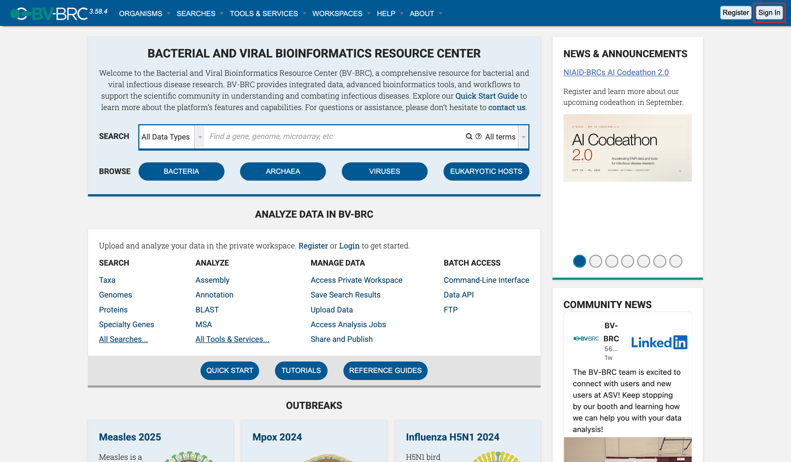
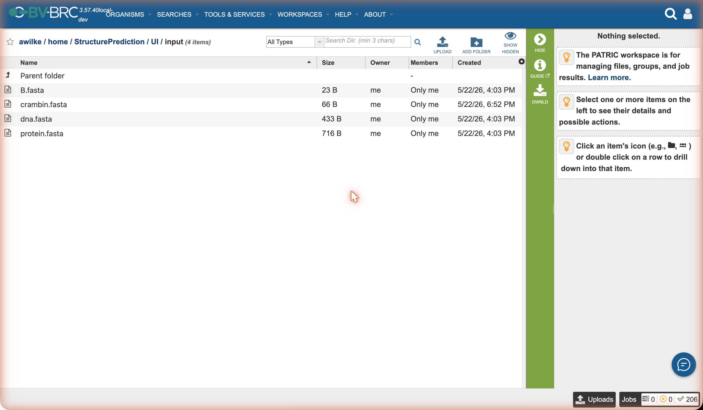
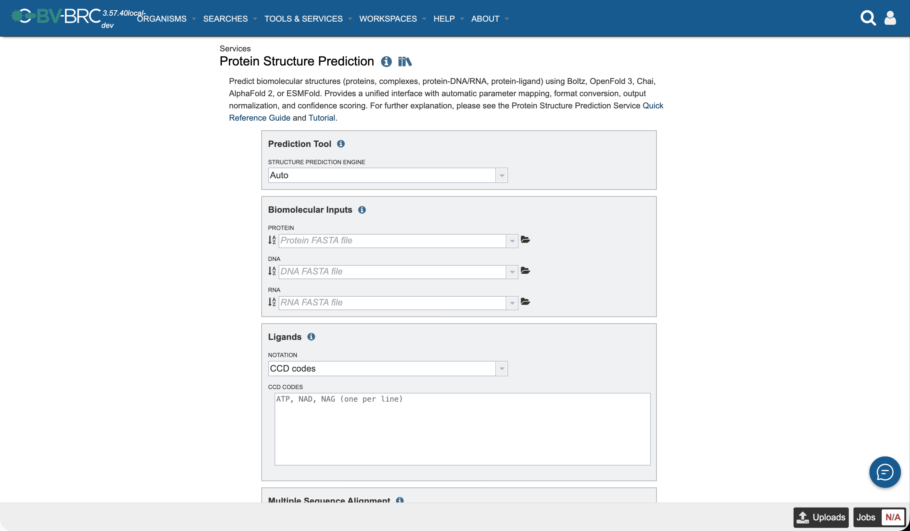
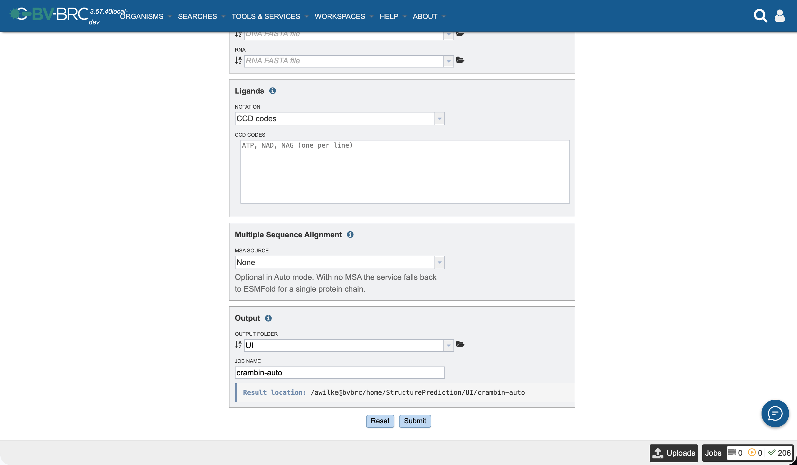
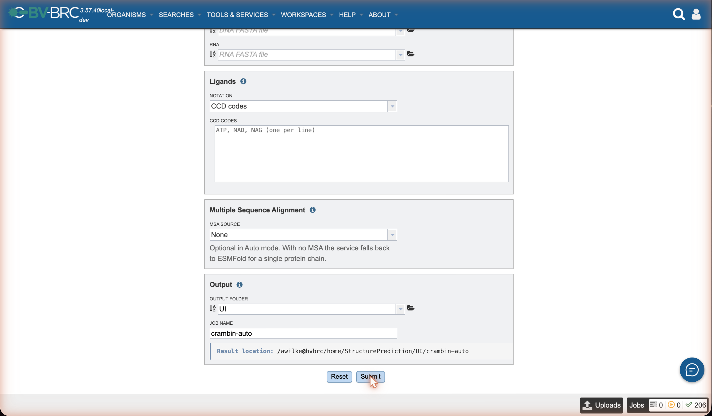
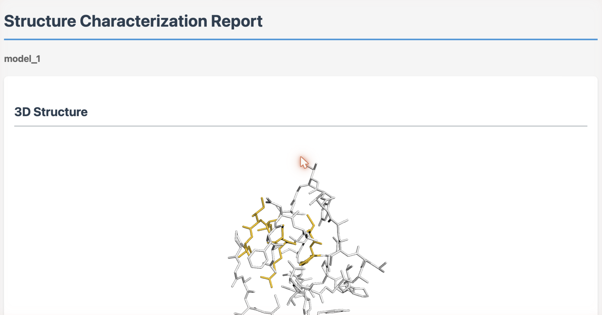

Protein Structure Prediction Tutorial¶
This tutorial walks you through predicting the 3D structure of a small protein from scratch using the BV-BRC Protein Structure Prediction Service. We’ll use crambin — a 46-amino-acid plant seed protein and one of the classic “hello-world” structures in computational biology. Its small size means every tool you choose returns a result in minutes, which makes it ideal for learning.
What you’ll do¶
Sign in to BV-BRC.
Upload a FASTA file with the crambin sequence to your workspace.
Submit a prediction job using the Auto tool selector.
Wait for the job to complete.
Open the result, interpret the confidence metrics, and download the structure.
Prerequisites¶
A free BV-BRC account (register here)
A web browser
You do not need a GPU, an MSA, or any local software. Everything happens on the BV-BRC servers.
Background — what we’re predicting¶
Crambin is a hydrophobic 46-residue protein from the Crambe abyssinica seed. Its experimental structure (PDB ID 1CRN) has been solved at near-atomic resolution, which means we have ground truth to compare against. The sequence:
TTCCPSIVARSNFNVCRLPGTPEALCATYTGCIIIPGATCPGDYAN
It contains three disulfide bonds (Cys3–Cys40, Cys4–Cys32, Cys16–Cys26) and forms a compact α-helix / β-sheet fold. If a tool gets crambin wrong, something is seriously broken; if it gets it right, that tells you very little — crambin is in every training set. We use it here because it’s small and fast, not because it’s a hard test.
For a deeper introduction to what the prediction is actually doing, see the Protein Folding Primer (companion doc).
Step 1 — Sign in¶
Open https://www.bv-brc.org in your browser. Click Sign In in the top-right corner.

Sign in with your BV-BRC credentials.
Step 2 — Upload the crambin FASTA¶
Save the following as crambin.fasta on your computer:
>1CRN|Crambin|46aa
TTCCPSIVARSNFNVCRLPGTPEALCATYTGCIIIPGATCPGDYAN
In BV-BRC:
Click Workspaces → My Workspace in the top nav.
Navigate into the folder you want to use (or create a new one called
tutorial-crambin).Click Upload in the green Action Bar on the right.
Choose FASTA Sequence File, select
crambin.fasta, and click Start Upload.
The file appears in the folder once upload completes.

Step 3 — Open the Protein Structure Prediction service¶
From the main menu, choose Services → Protein Tools → Protein Structure Prediction.
Or go directly to: https://www.bv-brc.org/app/PredictStructure
You should see the input form:

The fields are documented in detail in the Quick Reference. For this tutorial we’ll fill in only the basics.
Step 4 — Fill in the form¶
Field |
Value |
|---|---|
Prediction Tool |
|
Protein |
click the workspace selector, choose |
DNA / RNA |
leave empty |
Ligands |
leave empty |
SMILES |
leave empty |
MSA File |
leave empty |
Output Folder |
click the folder selector, choose |
Job Name |
type |
A submission creates a job with the name you enter. The job appears in your workspace as an object at <Output Folder>/<Job Name> — for this tutorial, tutorial-crambin/crambin-auto. That object holds all job-related info: parameters, status, logs, and the prediction results.
The Result location bar directly below the Job Name field previews this path as you type. The form runs live validation; the Submit button enables once you have an Output Folder, a Job Name, at least one biomolecular input, and — for Boltz / OpenFold / Chai — an MSA file.

Why
Auto? With only a protein and no MSA, the auto-selector picks ESMFold — it’s the only engine that runs without an MSA on a single sequence (see the tool selector decision tree). If you pickboltzorchaiwithout uploading an MSA, the submission will fail with a policy error.
Step 5 — Submit¶
Click Submit at the bottom of the form. A confirmation toast appears in the lower-left and the new job shows up in My Jobs (top-right user menu).

Step 6 — Wait¶
Crambin via ESMFold on a GPU runs in roughly 15–60 seconds plus queue time. Refresh the Jobs list, or open the job to see its live status:
Status |
Meaning |
|---|---|
|
Waiting for a worker |
|
Running |
|
Output is in your workspace |
|
Something went wrong; click into the job to see stderr |
Step 7 — Open the result¶
Click the completed job. The workspace object (tutorial-crambin/crambin-auto) opens with this layout (full reference: Quick Reference → Output Results):
crambin-auto/
├── results.json
├── report.html ← interactive 3D viewer
├── inputs/
│ └── query.fasta
├── predictions/
│ ├── rank_1.pdb ← the predicted structure
│ └── rank_1.cif
├── reports/
│ ├── confidence.json
│ ├── plddt.csv
│ └── pae.png
└── metadata/
├── tool.json
└── runtime.json
View the structure¶
Click report.html and choose View from the Action Bar. A 3D viewer opens (3Dmol.js) showing crambin folded into its characteristic small α/β fold, with three disulfide bridges visible if you toggle the sticks representation for cysteines.

Read the confidence¶
Open reports/confidence.json (or look at the panel beneath the 3D viewer in report.html):
{
"tool": "esmfold",
"plddt_mean": 87.4,
"plddt_min": 71.2,
"ptm": 0.81,
"model_confidence": 0.83
}
Interpreting these:
plddt_mean = 87.4— high confidence. A value above 80 on a 46-residue monomer says ESMFold is confident across the whole chain.plddt_min = 71.2— even the worst residue is in the “confident” band (>70). No disordered tails.ptm = 0.81— the overall fold is almost certainly right.
If you compare the rank-1 PDB to the experimental 1CRN structure (e.g. via TM-align), you should see a TM-score above 0.9 — ESMFold reproduces crambin essentially perfectly. As noted above, this isn’t a stress test; it confirms the pipeline works end-to-end.
Download the structure¶
From the Action Bar, choose Download on predictions/rank_1.pdb to save it locally. Open it in PyMOL, ChimeraX, Mol*, or any PDB viewer.
What to try next¶
Variation |
What to change |
What you’ll learn |
|---|---|---|
Same protein, different tool |
Pick |
How a richer MSA affects diffusion-tool confidence |
Multi-chain complex |
Submit a multi-record FASTA (chains A and B in one file). Crambin doesn’t naturally dimerize — try a known dimer like the Cro repressor instead |
Multimer prediction and |
Protein + ligand |
Add |
Co-folding with a small molecule, PoseBusters-style |
Compare engines side-by-side |
Run the CWL workflow |
Quantitative head-to-head on your own targets |
Troubleshooting¶
No inputs supplied¶
You hit Submit with the Protein, DNA, RNA, ligand, and SMILES fields all empty. Provide at least one.
Invalid ligand CCD code 'ABCD'¶
CCD codes are 1–3 alphanumeric characters. Use ATP, not ATPase.
Boltz / OpenFold / Chai require an MSA¶
Set MSA Source to Precomputed MSA from Workspace and upload an .a3m, .sto, or .pqt file, or set it to Use MSA Server or Service to have BV-BRC compute the MSA with ColabFold. Auto and ESMFold don’t need an MSA at all.
Job is queued for a long time¶
GPU partitions are shared. ESMFold jobs have low resource requests and usually start within minutes; Boltz / OpenFold / Chai may wait longer. AlphaFold 2 jobs can wait significantly longer because they hold a GPU for an hour or more.
Result viewer doesn’t render¶
report.html loads 3Dmol.js from https://3dmol.org/build/3Dmol-min.js (a CDN, not an embedded script). If the viewer appears blank:
Network can’t reach 3dmol.org — check connectivity, corporate proxy / firewall rules, or a captive portal.
Ad-blocker or content-script extension is blocking the CDN — try a private/incognito window or disable extensions for the workspace domain.
Strict Content-Security-Policy in the browser is rejecting the script — open the developer console (Cmd-Opt-J / Ctrl-Shift-J) and look for
Refused to load the scriptorBlocked by CSPerrors.
The underlying structure file (predictions/rank_1.pdb) still downloads and opens in PyMOL, ChimeraX, or any local viewer if you’d rather skip the embedded viewer entirely.
See also¶
Quick Reference — every form field documented
Recipes — patterns for multi-chain complexes, ligands, MSAs, reruns
Protein Structure Prediction Service — open the form